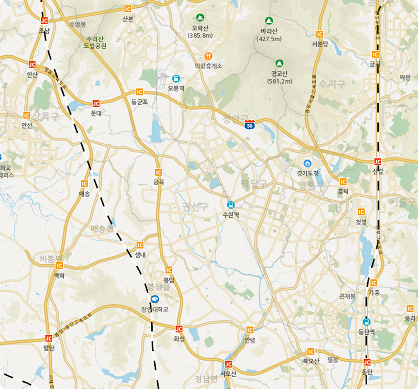

기간 (2017-01-01 ~ 2025-06-30)
| 일 | 월 | 화 | 수 | 목 | 금 | 토 |
|---|---|---|---|---|---|---|
시간
요일
사고대상
사고유형
노인
어린이
대상별
년도별 (최근 3년)

| 구분 | 거주인구수 |
|---|---|
| 유소년(1~14세) | 2,897명 |
| 생산가능(15~64세) | 32,312명 |
| 고령자(65세 이상) | 5,594명 |
| 유아(1~7세) | 1,047명 |
| 초등학생(8~13세) | 1,401명 |
| 중학생(14~16세) | 692명 |
| 고등학생(17~19세) | 718명 |
* 출처: 국토교통부
| 구분 | 유동인구 | 구분 | 유동인구 |
|---|---|---|---|
| 205,832 이상 | 91,481 ~ 114,351 | ||
| 182,962 ~ 205,832 | 68,610 ~ 91,481 | ||
| 160,092 ~ 182,962 | 45,740 ~ 68,610 | ||
| 137,221 ~ 160,092 | 22,870 ~ 45,740 | ||
| 114,351 ~ 137,221 | 22,870 이하 |